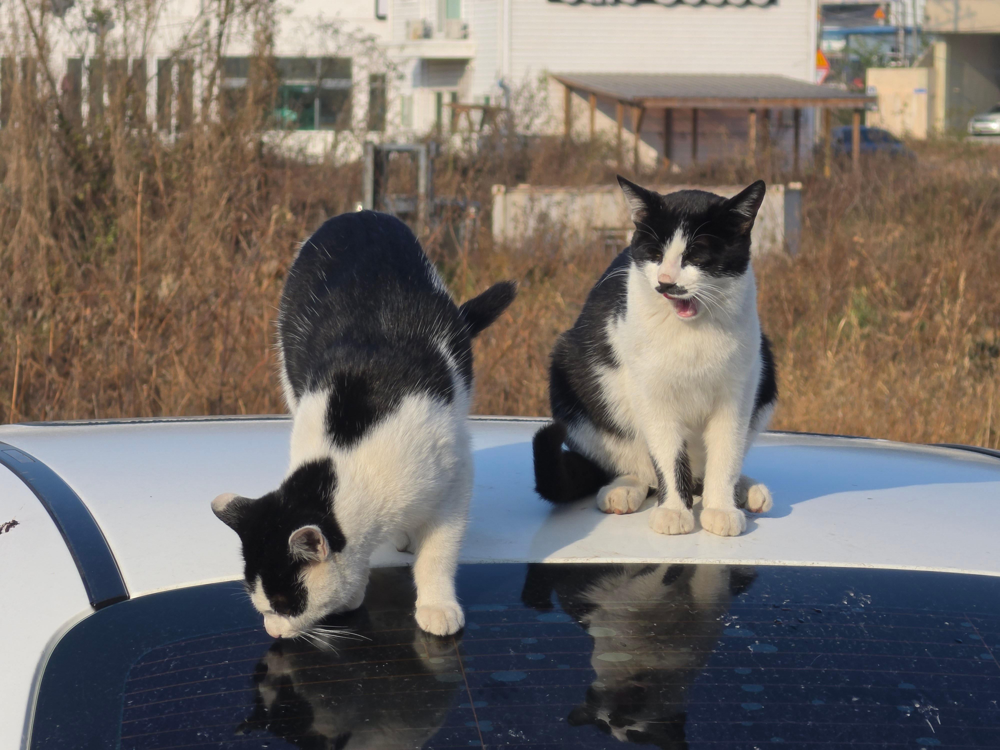
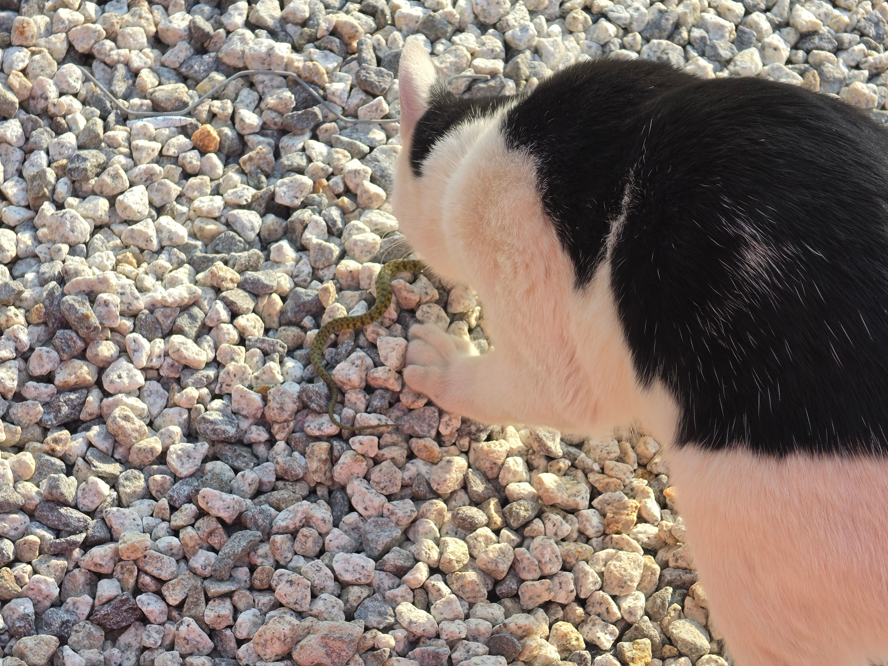
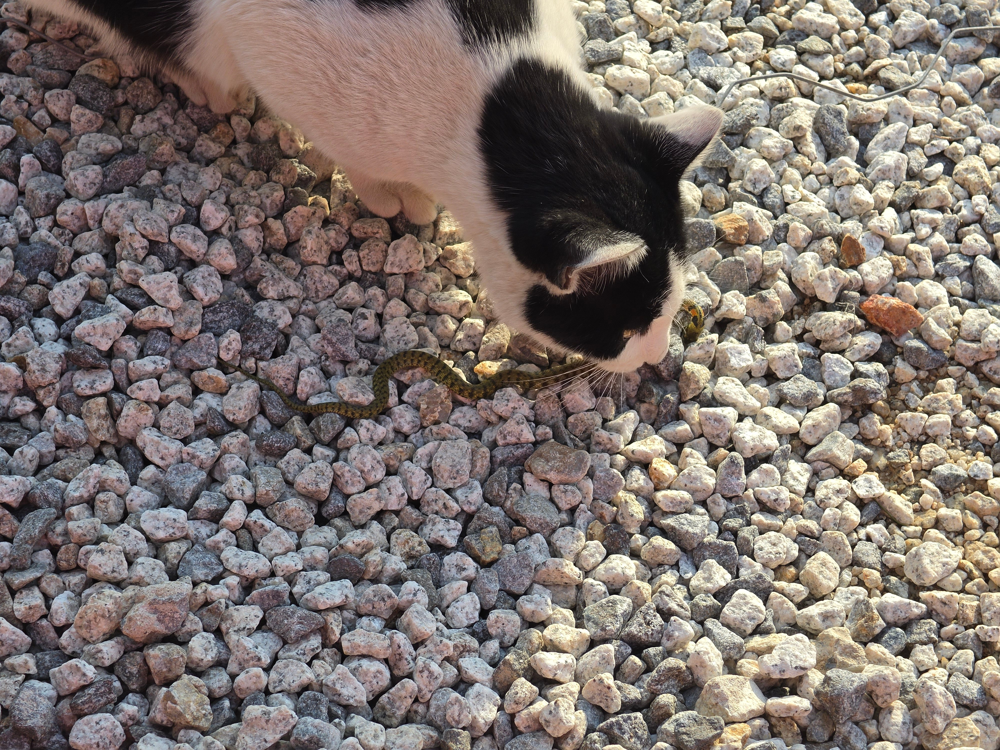
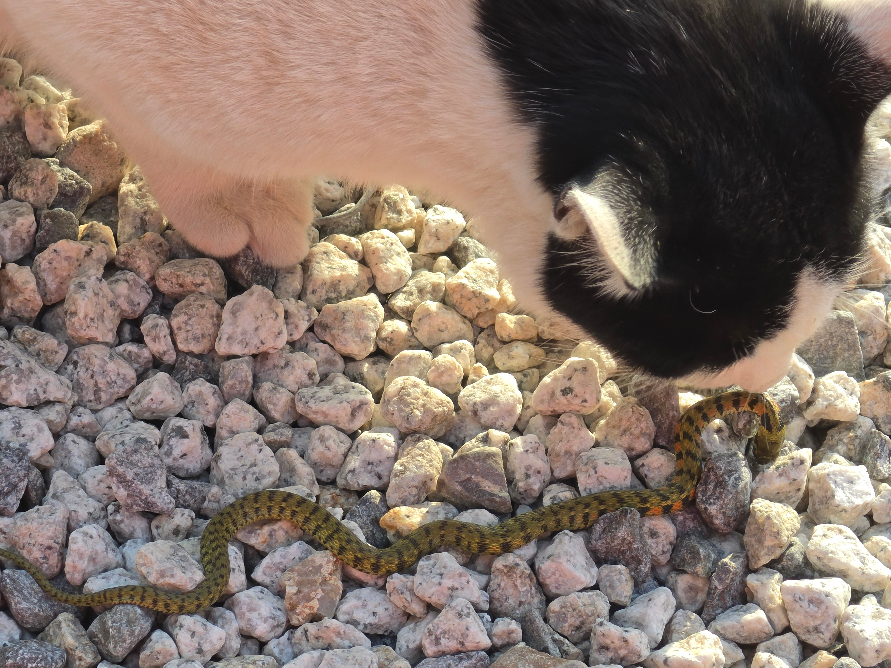
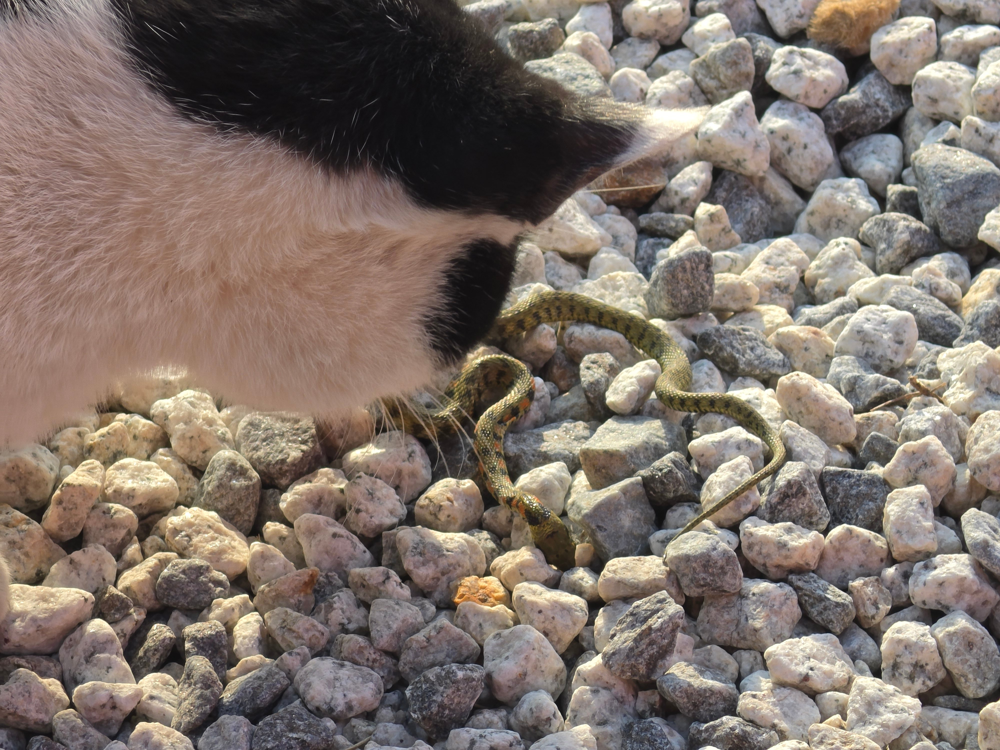
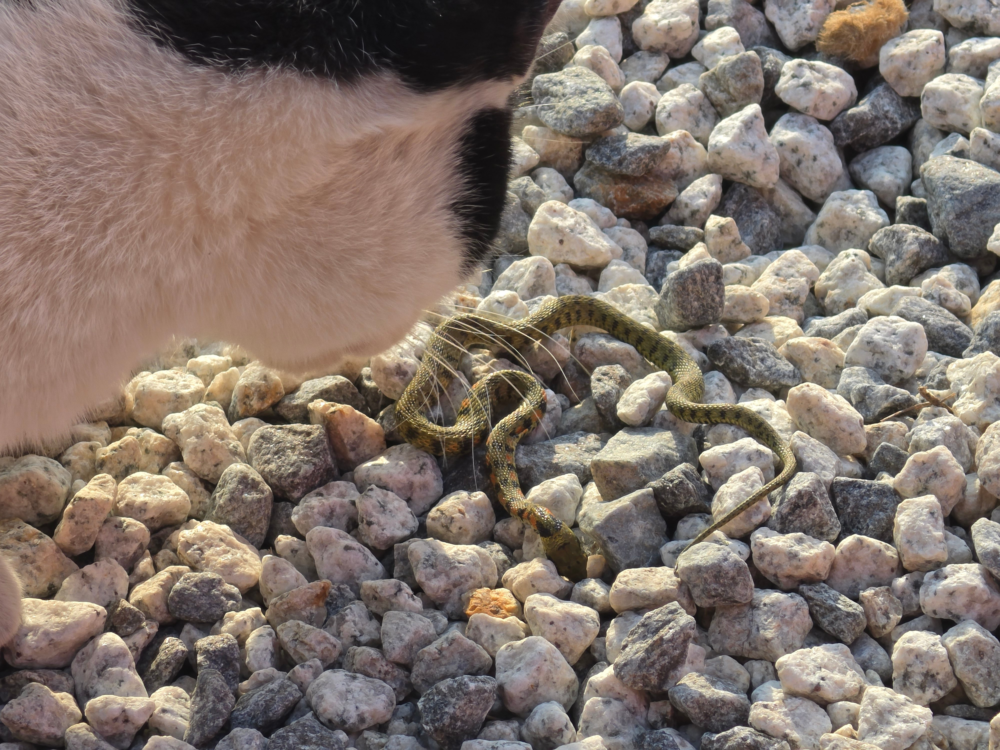
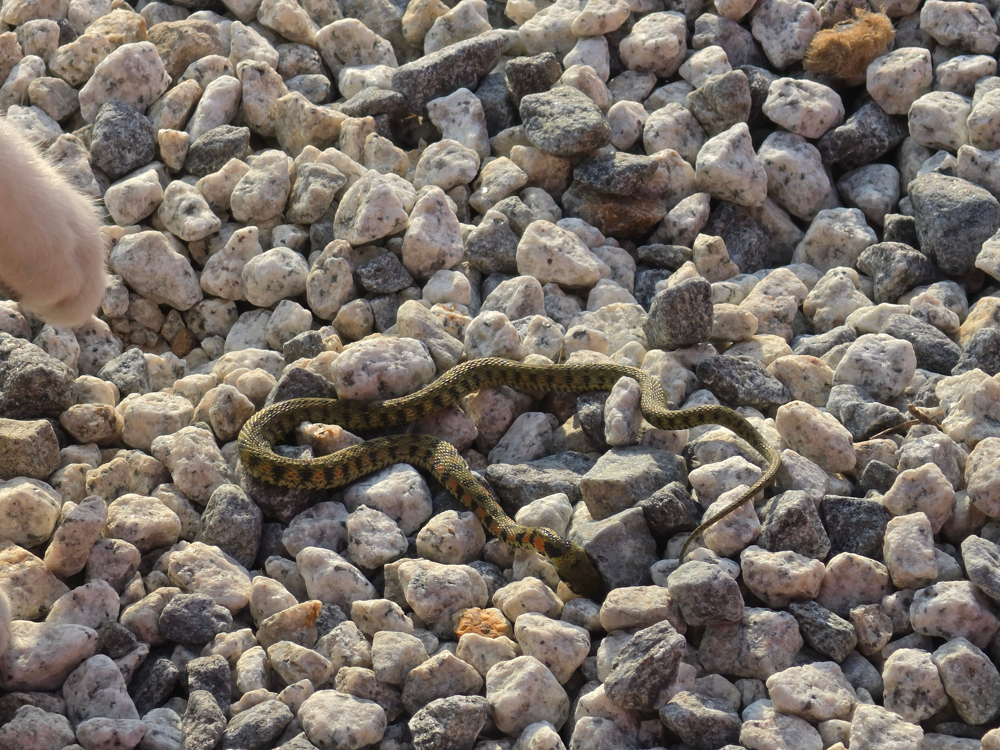
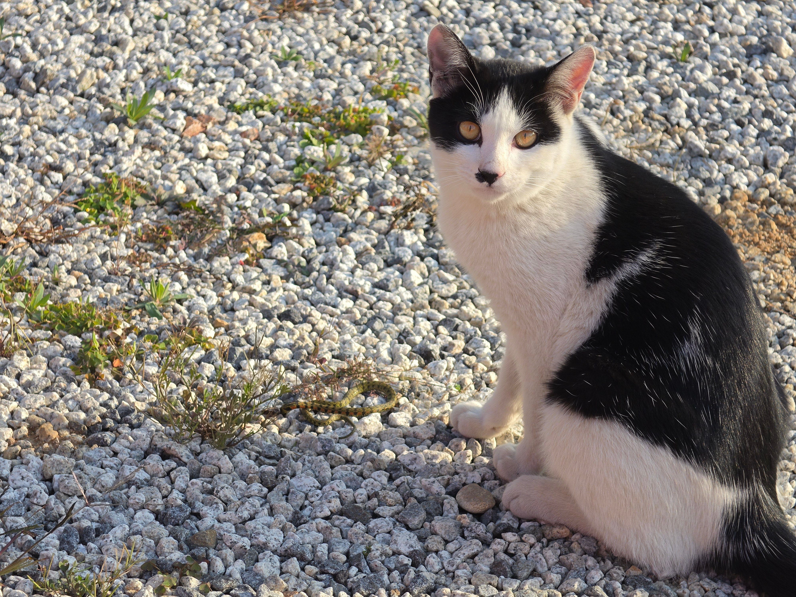
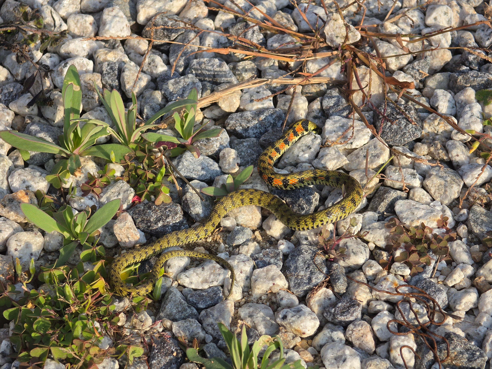
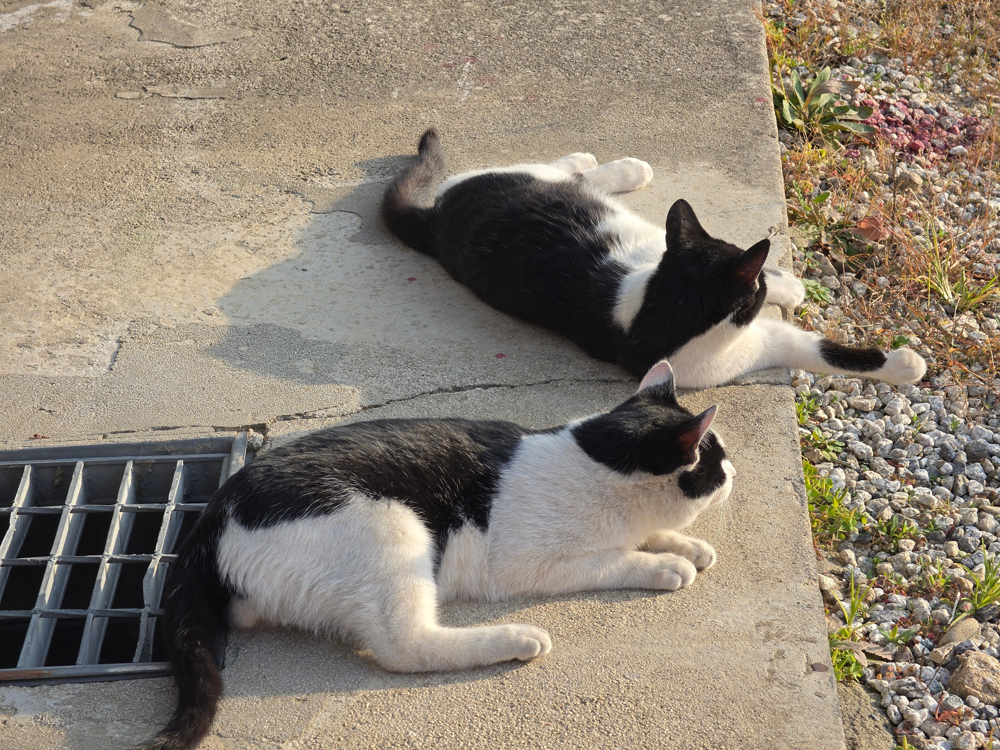

먹어야된다고?










먹어야된다고?
뒤지란거야
??? : 어휴 사냥도 못하는 ㅈ밥련 나라도 챙겨줘야지 이거나 먹어라 ㅉㅉ
좀 히틀러 같음
?
보자마자 그생각했는데 ㅋㅋ
유혈목이 같은데
독사임
어떻게든 인간을 죽이려고 ....
너불대인데 죽었나?
안먹으면 상처받는다 빨리 씹어라
와씨 색깔도 독있게 생겼는데 ㄷㄷ
독산데
비스탄
독산데 비슷한 무언가
꽃뱀 아녀?
꽃뱀(유혈목이) - 독사임
꽃뱀이 독사였구나.. 몰랐음
길고양이 주제에 기미상궁 시키네
독기가 가득해 아주~~
함무바라 죽는다
진짜 죽음
ㄹㅇㅋㅋ
개붕이가 평소에 잘 챙겨줬나보네 ㅋㅋ 선물도 다 받고
흔한뱀인데 독성은 존나 쌔다던데
독니가 안쪽에 있고 공격성이 낮아서 잘 안알려 졌는데 물려 죽는 경우도 종종 나온다함
종종 ㄴㄴ
유혈목이 독때문에 사망한 사례는 전세계적으로 통틀어도 진짜 손에 꼽을 정도임
공격성은 둘째치고 소형뱀이라 입도 작은데 독니가 거의 목구멍에 있어서 함 삼키바라 하면서 손가락을 목구멍에 쑤셔넣지 않는 이상 유혈목이 독니에 찔릴 일이 거의 없음
그래도 물리면 계집애 마냥 울거임
꺄아아아악 꽃뱀이다!!!!!
꽃뱀이네
독있뱀인데?
독성있을꺼 같은데요..?
고양이가 보는 앞에서 먹은시늉하면서 주머니에 넣어라 거절하면 고양이 삐진다
애들 밥 잘줫네
가을뱀이라 독 쎌건데 ㅎㅎ
뱀은 가을이 제철이구나
고양이 암살단
사진 오ㅑㄹ케 선명해
개붕아 눈치가 있다면
유혈목이?